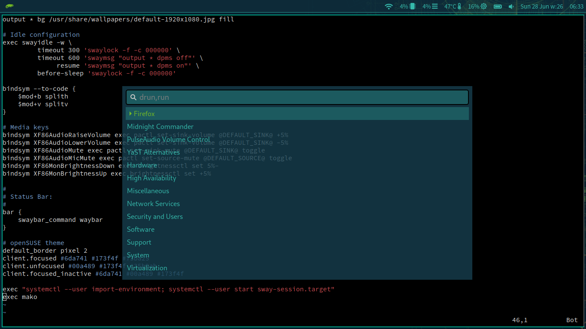
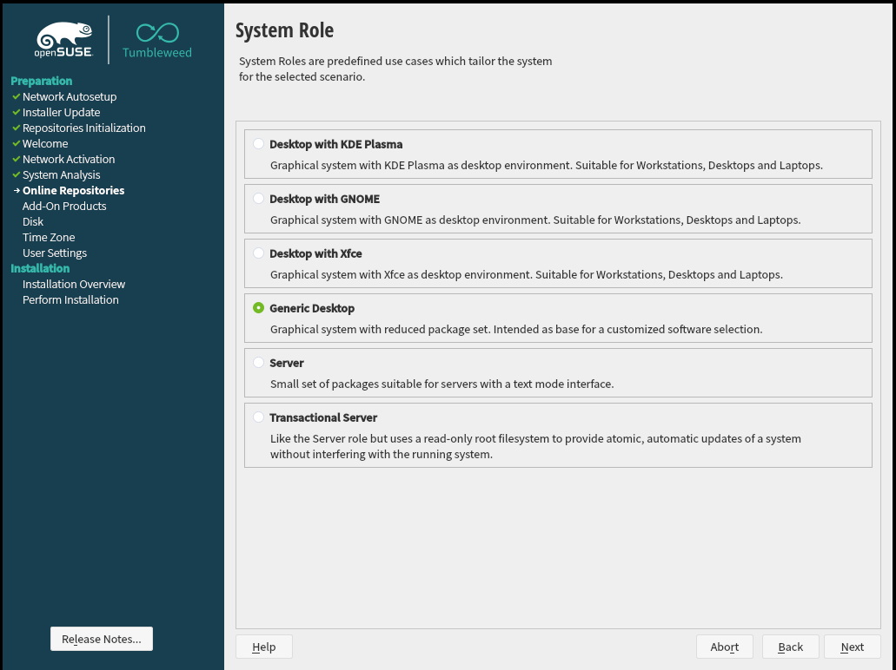
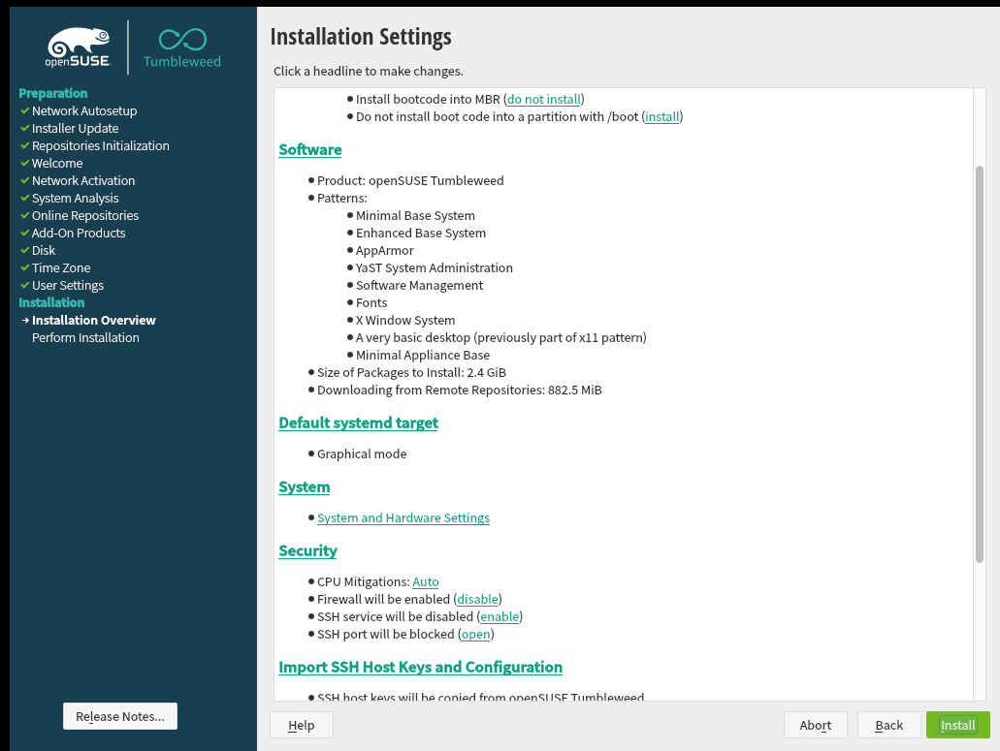
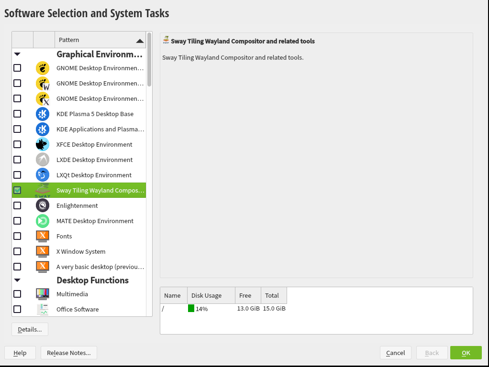
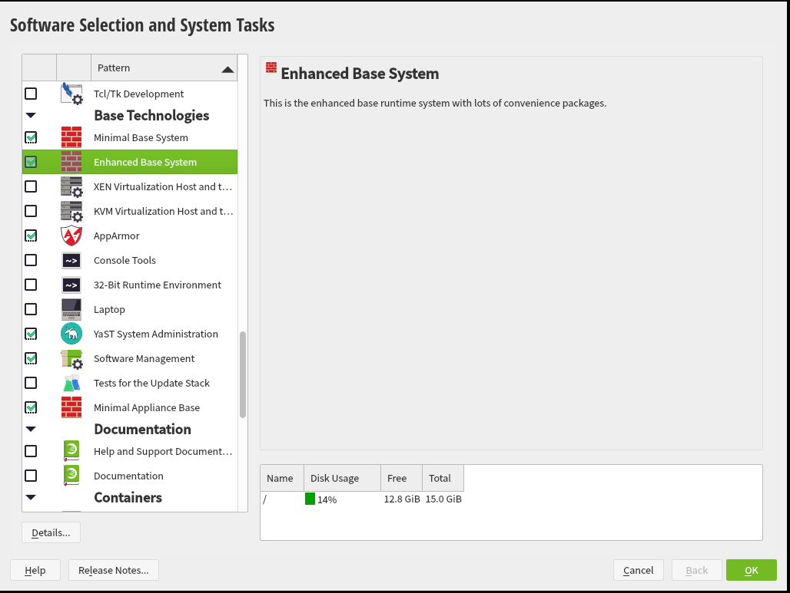
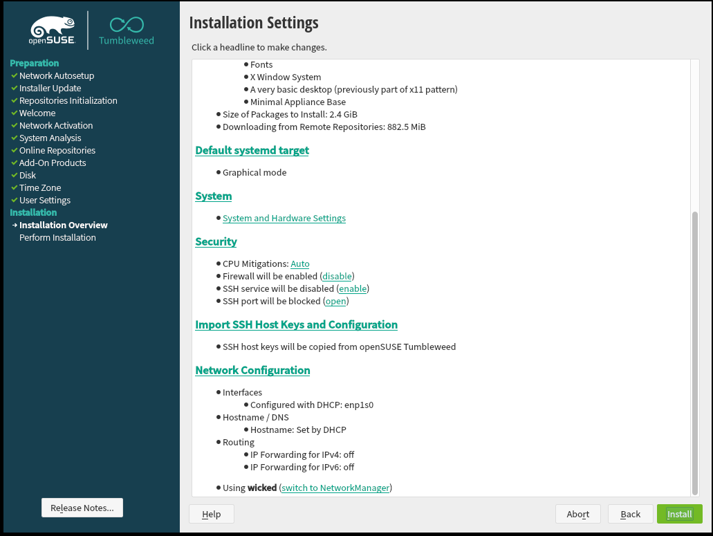

My personal favorite way to interact with the windows on my computer is the Sway window manager. Drew's video on the swaywm.org site explains the concept of sway and tiling window managers better than I can here. I use it instead of i3 because 1) it does compositing and I have no screen tearing, and 2) window movements with Super+mouse work very well.
The common problem with tiling window managers is the default config. Sway's is unopinionated and bare, and doesn't provide a bunch of functionality out of the box. Plus, default keybinds for a terminal and launcher are both for Xorg programs, not wayland-native replacements. On many GNU/Linux distributions, sway is shipped default, if at all. However, openSUSE just changed that! They include a fantastic swaywm config by default:

In order to obtain this, just go through the openSUSE tumbleweed install as normal, but select a few things different than the default install.
Boot the openSUSE network installer from a flash drive or in a VM. I'm doing it in a VM for screenshots. Select the "Generic Desktop" system.

Walk through the rest of the installer (partitioning, users, timezone) as you see fit.

When you get here, STOP, and click on the teal "Software" word. It'll bring you to the software selecitons page. Select Sway, and then scroll down and select "Enhanced Base System" as well, for regular extra goodies. You'll probably miss something without it, and it can't hurt.


Also, unless you know you want it, scroll down on the Installation Settings page before installing and select "Switch to NetworkManager". It's more standard and easy to use. If you've used Linux before you'll be used to it.

And there you go. You'll have an excellent sway desktop on a solid rolling release with great defaults. This does not include a web browser, mail client, or display manager - when you first boot the system, you'll have to login to the console, and just run 'sway' on the console. Next, to enable sway to start by default on the console, run this in a terminal:
echo '[ $(tty) == "/dev/tty1" ] && exec sway' >> ~/.profileHave fun with your silly meme tiling window manager! I've grown to love them over the years, and maybe this will help you.